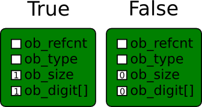
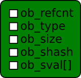
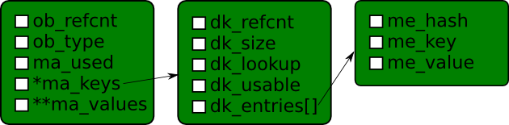

introducción
- Python 3.3
- Usare ctypes para los ejemplos.
- La estructura de un objeto en cpython.
- Los objetos escritos en c de python.
- El proceso de creacion de un nuevo objeto
¿Que es un tipo en python?
- Un tipo es una clase
- Es una estructura compuesta de datos y slots
- Los slots son punteros a funciones que definen comportamientos
- Los tipos son objetos de python
- Los tipos son de tipo tipo (??????)
¿Que es un tipo en python?
>>> class Prueba:
... pass
...
>>> type(Prueba)
<class 'type'>
>>> isinstance(Prueba, object)
True
>>> isinstance(type, object)
True
>>> type(type)
<class 'type'>
¿Que es una instancia?
- Es exactamente lo mismo que un objeto.
- Es una zona reservada de la memoria con datos.
- Tiene un tipo (y solo 1) que determina que puede hacer el objeto.
- El tipo de un objeto no cambia a lo largo de su vida (existen excepciones).
¿Que es una instancia?
>>> prueba = Prueba()
>>> type(prueba)
<class '__main__.Prueba'>
>>> prueba
<__main__.Prueba object at 0x7f3555af9bd0>
>>> Prueba
<class '__main__.Prueba'>
>>> id(prueba)
139867047566288
>>> hex(id(prueba))
'0x7f3555af9bd0'
Diagrama de herencia

Diagrama de herencia

Estructura básica de un objeto

- ob_refcnt: contador de referencias
- ob_type: puntero al tipo de datos
- Otros datos especificos para este tipo
Estructura variable básica de un objeto

- ob_refcnt: contador de referencias
- ob_type: puntero al tipo de datos
- ob_size: tamaño del objeto
- Otros datos especificos para este tipo
El objeto None
- Es el tipo más simple
- Su instancia es singleton
- No añade ningun dato extra a la estructura básica de objeto
Principales slot definidos
- tp_new: Devuelve la instancia de none
- tp_dealloc: Falla, nunca debe ser llamado
- tp_as_number->nb_bool: Devuelve un 0
El objeto int

- ob_digit: array de enteros
- El valor del entero es sum(map(lambda x: 1024*1024*1024, ob_size))
El objeto int

El objeto int
>>> longsize = ctypes.sizeof(ctypes.c_long)
>>> intsize = ctypes.sizeof(ctypes.c_int)
>>> x = 100
>>> ctypes.c_long.from_address(id(x) + longsize * 2)
c_long(1)
>>> ctypes.c_uint.from_address(id(x) + longsize * 3)
c_uint(100)
>>> x = 1024 * 1024 * 1024
>>> ctypes.c_long.from_address(id(x) + longsize * 2)
c_long(2)
>>> ctypes.c_uint.from_address(id(x) + longsize * 3)
c_uint(0)
>>> ctypes.c_uint.from_address(id(x) + longsize * 3 + intsize)
c_uint(1)
Very bad things
>>> longsize = ctypes.sizeof(ctypes.c_long)
>>> x = 100
>>> int_value = ctypes.c_uint.from_address(id(x) + longsize * 3)
>>> int_value.value = 101
>>> x
101
>>> 100
101
>>> 100 + 2
103
Very bad things
>>> longsize = ctypes.sizeof(ctypes.c_long)
>>> x = 888
>>> y = x
>>> ob_refcnt = ctypes.c_long.from_address(id(x))
>>> ob_refcnt
c_long(2)
>>> ob_refcnt.value = 1
>>> del(x)
>>> ctypes.c_long.from_address(id(y))
[1] 22700 segmentation fault (core dumped) python3
El objeto bool

- Realmente son 2 instancias int con un tipo especifico y valores 0 y 1
El objeto bool
>>> longsize = ctypes.sizeof(ctypes.c_long)
>>> ctypes.c_long.from_address(id(True) + longsize * 2)
c_long(1)
>>> ctypes.c_uint.from_address(id(True) + longsize * 3)
c_uint(1)
>>> ctypes.c_long.from_address(id(False) + longsize * 2)
c_long(0)
>>> ctypes.c_uint.from_address(id(False) + longsize * 3)
c_uint(0)
Very Bad Things
>>> val = ctypes.c_int.from_address(id(True) + longsize * 2)
>>> val.value = 0
>>> val = ctypes.c_int.from_address(id(True) + longsize * 3)
>>> val.value = 0
>>> True == False
True
El objeto float
>>> longsize = ctypes.sizeof(ctypes.c_long)
>>> x = 1.5
>>> ctypes.c_double.from_address(id(x) + longsize * 2)
c_double(1.5)
El objeto complex

- cval: dos valores double real e imag
El objeto complex
>>> longsize = ctypes.sizeof(ctypes.c_long)
>>> doublesize = ctypes.sizeof(ctypes.c_double)
>>> x = 1 + 3j
>>> ctypes.c_double.from_address(id(x) + longsize * 2)
c_double(1.0)
>>> ctypes.c_double.from_address(id(x) + longsize * 2 + doublesize)
c_double(3.0)
El objeto bytes

- ob_shash: hash de la cadena o -1
- ob_sval: cadena terminada en \0 (tipo C)
El objeto bytes

El objeto bytes
>>> longsize = ctypes.sizeof(ctypes.c_long)
>>> charsize = ctypes.sizeof(ctypes.c_char)
>>> x = b"yep"
>>> ctypes.c_long.from_address(id(x) + longsize * 2)
c_long(3)
>>> hash(x)
954696267706832433
>>> ctypes.c_long.from_address(id(x) + longsize * 3)
c_long(954696267706832433)
>>> ctypes.c_char.from_address(id(x) + longsize * 4)
c_char(b'y')
>>> ctypes.c_char.from_address(id(x) + longsize * 4 + charsize)
c_char(b'e')
>>> ctypes.c_char.from_address(id(x) + longsize * 4 + charsize * 2)
c_char(b'p')
>>> ctypes.c_char.from_address(id(x) + longsize * 4 + charsize * 3)
c_char(b'\x00')
El objeto bytearray

- ob_exports: memoryviews apuntando a este objeto
- ob_alloc: contabiliza el numero de bytes almacenados
- ob_bytes: puntero a la posición de los bytes almacenados
El objeto bytearray
>>> longsize = ctypes.sizeof(ctypes.c_long)
>>> charsize = ctypes.sizeof(ctypes.c_char)
>>> x = bytearray(b"yep")
>>> ctypes.c_long.from_address(id(x) + longsize * 2)
c_long(3)
>>> ctypes.c_long.from_address(id(x) + longsize * 3)
c_long(0)
>>> ctypes.c_long.from_address(id(x) + longsize * 4)
c_char(4)
>>> addr = ctypes.c_void_p.from_address(id(x) + longsize * 5).value
>>> ctypes.c_char.from_address(addr)
c_char(b'y')
>>> ctypes.c_char.from_address(addr + charsize)
c_char(b'e')
El objeto tuple

- ob_item: array de punteros a PyObject
El objeto tuple
>>> longsize = ctypes.sizeof(ctypes.c_long)
>>> x = (True, False)
>>> ctypes.c_long.from_address(id(x) + longsize * 2)
c_long(2)
>>> ctypes.c_void_p.from_address(id(x) + longsize * 3)
c_void_p(140048684311616)
>>> ctypes.c_void_p.from_address(id(x) + longsize * 4)
c_void_p(140048684311648)
>>> id(True)
140048684311616
>>> id(False)
140048684311648
El objeto list

- ob_item: puntero a punteros de PyObject
- allocated: memoria reservada actualmente para la lista
El objeto list
>>> longsize = ctypes.sizeof(ctypes.c_long)
>>> x = [1,2,3]
>>> ctypes.c_long.from_address(id(x) + longsize * 2)
c_long(3)
>>> ctypes.c_void_p.from_address(id(x) + longsize * 3)
c_void_p(36205328)
>>> ctypes.c_void_p.from_address(36205328)
c_void_p(140048684735040)
>>> id(1)
140048684735040
>>> ctypes.c_void_p.from_address(36205328 + longsize)
c_void_p(140048684735072)
>>> id(2)
140048684735072
El objeto dict

- ma_used: número de items.
- ma_keys: puntero a la estructura que almacena el diccionario.
- ma_values: puntero a punteros de PyObject (para slited tables y NULL para combined tables).
PyDictKeysObject
- dk_refcnt: contador de referencias
- dk_size: Tamaño total de la tabla hash para guardar entradas
- dk_lookup: Slot para funcion de busqueda
- dk_usable: La fraccion usable del diccionario antes de un redimensionado
- dk_entries[n]: Las entradas en la tabla hash
PyDictKeyEntry
- me_hash: Hash de la key
- me_key: Puntero al objeto key
- me_value: Puntero al objeto valor (Solo para combined tables)
El objeto dict
>>> longsize = ctypes.sizeof(ctypes.c_long)
>>> d = {1: 3, 7: 5}
>>> keys = ctypes.c_void_p.from_address(id(d) + longsize * 3).value
>>> keyentry1 = keys + longsize * 4 + longsize * hash(1) * 3
>>> keyentry7 = keys + longsize * 4 + longsize * hash(7) * 3
>>> key1 = ctypes.c_long.from_address(keyentry1 + longsize).value
>>> val1 = ctypes.c_long.from_address(keyentry1 + longsize * 2).value
>>> key7 = ctypes.c_long.from_address(keyentry7 + longsize).value
>>> val7 = ctypes.c_long.from_address(keyentry7 + longsize * 2).value
>>> ctypes.c_uint.from_address(key1 + longsize * 3)
c_long(1)
>>> ctypes.c_uint.from_address(val1 + longsize * 3)
c_long(3)
>>> ctypes.c_uint.from_address(key7 + longsize * 3)
c_long(5)
>>> ctypes.c_uint.from_address(val7 + longsize * 3)
c_long(7)
El objeto type (no completo)
- tp_name: Nombre de la clase
- tp_doc: El docstring del tipo
- tp_dict: El docstring del tipo
- tp_dictoffset: El docstring del tipo
- tp_as_number: Puntero a estructura de slots
- tp_as_sequence: Puntero a estructura de slots
- tp_as_mappings: Puntero a estructura de slots
El objeto type
>>> longsize = ctypes.sizeof(ctypes.c_long)
>>> ctypes.c_char_p.from_address(id(int) + longsize * 3)
'int'
>>> ctypes.c_char_p.from_address(id(type) + longsize * 3)
'type'
>>> class Prueba:
... pass
...
>>> ctypes.c_char_p.from_address(id(Prueba) + longsize * 3)
'Prueba'
Operaciones sobre objetos
Como se almacenan los atributos
- Los de clase en tp_dict
- Los de los objetos en id(obj) + tp_dictoffset
- No todos los tipos permiten atributos de objeto
Como se crea un objeto
- Se llama al tp_call del tipo
- Este llama al tp_new del tipo que le devuelve un objeto inicializado en memoria
- Llama al tp_init del type del objeto creado
Referencias
- Código de python: Include and Objects
- Documentación de ctypes: http://docs.python.org/3/library/ctypes.html
- Documentación de la API C de Python: http://docs.python.org/3/c-api/index.html
- PEP 412 -- Key-Sharing Dictionary
- Website de Eli Bendersky: http://eli.thegreenplace.net/
- Yaniv Aknin Tech Blog: http://tech.blog.aknin.name/